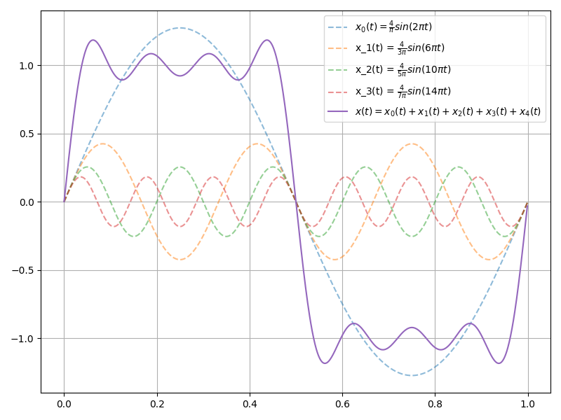

Problem 1.3: Illustrate the composition of a square wave signal by sketching the first four terms of the series given in Eq. 1.2 and then performing a graphical summation.
Problem 1.4: For a square wave audio signal of 10 Khz, what fraction of the available energy is perceived by an average listener of age 40 whose hearing extends only to 16 Khz?
Problem 1.5: Numerically evaluate the series expansion for a square wave given in Eq 1.2 truncated after 4 terms at $t = T/8, T/4, 5T/8$ and $3T/4$.
$$ v(t) = \frac{4}{\pi} \left(\sin(\omega_0 t) + \frac{1}{3} \sin(3\omega_0 t) + \frac{1}{5} \sin(5\omega_0 t) + ...\right) V\tag{Eq 1.2} $$
Problem 1.3:
Figure 1 illustrates the result of summing the first four harmonics of a suqare wave. Even after only 4 summations, the general square wave shape begins to take hold.

Figure 1: Summation of First 4 Square Wave Harmonics
Problem 1.4:
The problem gives a square wave frequency $f_0 = 10 Khz$ and maximum hearable frequency $f_{max} = 16 Khz$. Because $f_1 = 3f_0 = 30 Khz > f_{max}$ all of the hearable energy must be withing within the first sine wave in equation 1.2.
Knowing that all the energy is contained in the first harmonic simplifies the problem into finding the energy contained in $\frac{4}{\pi} \sin(2\pi f_0t)$ and then comparing it to the energy in the square wave.
Then the first step is to find the energy in $x(t) = \frac{4}{\pi} \sin(2\pi f_0t)$, when $f_0=10 Khz$. The definition for the energy of a signal is:
$$ E_s = \int_{-\infty}^{\infty} |{x(t)}|^2 $$
For the signal $x(t) = \frac{4}{\pi} \sin(2 \pi f_0 t)$ that becomes:
$$ E_s = \left(\frac{4}{\pi}\right)^2 \int_{-\infty}^{\infty} \sin^2(2\pi f_0 t) dt $$
Using the half angel identity:
$$ E_s = \left(\frac{4}{\pi}\right)^2 \int_{-\infty}^{\infty} \frac{1-cos(4\pi f_0t)}{2} dt $$
$$ E_s = \frac{8}{\pi^2} \int_{-\infty}^{\infty} 1-cos(4\pi f_0t) dt $$
Here we can clearly see that we are dealing with an infinite energy signal, but looking back at the problem we actually want to find the fraction of the hearable energy over total energy. Because the square wave and sine wave are periodic with the same period we can compare the energy in a single period, and that ratio holds.
So the Hearable Energy becomes:
$$ E_{hearable} = \frac{8}{\pi^2} \int_{0}^{T_0} 1-cos(4\pi f_0t) dt $$
$$ E_{hearable} = \frac{8}{\pi^2} \int_{0}^{T_0} 1 dt - \int_{0}^{T_0} cos(4\pi f_0t) dt $$
$$ E_{hearable} = \frac{8}{\pi^2} T_0 - \left[sin(4\pi f_0T_0) - sin(0)\right] $$
$$ E_{hearable} = \frac{8}{\pi^2} T_0 $$
To find the total energy note the equation for energy uses the absolute value squared, so that:
$$ E_{total} = \int_{0}^{T_0} 1 dt $$
$$ E_{total} = T_0 $$
Finally the fraction can be expressed as:
$$ \frac{E_{hearable}}{E_{total}} = \frac{\frac{8}{\pi^2} T_0}{T_0} $$
$$ \boxed{\frac{E_{hearable}}{E_{total}} = \frac{8}{\pi^2} \approx 81 \%} $$
Problem 1.5:
The series expansion from equation 1.2 after 4 iterations is:
$$ v(t) = \frac{4}{\pi} \left( \sin(\omega_0 t) + \frac{1}{3} \sin(3\omega_0 t) + \frac{1}{5} \sin(5\omega_0 t) + \frac{1}{7} \sin(7\omega_0 t) + \right) $$
At $t=T/8$ $\omega_0t$ is $2\pi t /T = 2\pi / 8 = \pi/4$ so that:
$$ v(t) = \frac{4}{\pi} \left( \sin(\pi/4) + \frac{1}{3} \sin(3\pi/4) + \frac{1}{5} \sin(5\pi/4) + \frac{1}{7} \sin(7\pi/4) + \right) $$
$$ v(t) = \frac{4}{\pi} \left( .707 + \frac{.707}{3} - \frac{.707}{5} - \frac{.707}{7} + \right) $$
$$ v(t) = 0.892 $$
Table 1 summarizes the results for $t=T/4, 5T/8$ and $3T/4$:
Table 1: Question 1.5 Results
| t | $v(t)$ |
|---|---|
| T/8 | 0.892 |
| T/4 | 0.922 |
| 5T/8 | -0.892 |
| 3T/4 | -0.922 |